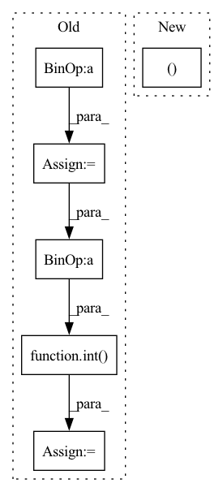

Pattern ID :1063
Before Change
df_train (pd.DataFrame): training data
df_val (pd.DataFrame): validation data
n_samples = len(df) - n_lags + 2 - (2 * n_forecasts)
n_samples = n_samples if inputs_overbleed else n_samples - n_lags
if 0.0 < valid_p < 1.0:
n_valid = max(1, int( n_samples * valid_p) )
else:
assert valid_p >= 1
assert type(valid_p) == intAfter Change
df_val_list = list()
if local_modeling:
for df in df_list:
df_train, df_val = single_split_df(df, n_lags, n_forecasts, valid_p, inputs_overbleed)
df_train_list.append(df_train)
df_val_list.append(df_val)
df_train, df_val = df_train_list, df_val_listIn pattern: SUPERPATTERN
Frequency: 4
Non-data size: 6
Instances Fragment ID: 5364305
Project Name: ourownstory/neural_prophet
Commit Name: d07b79568ef37904de81ba00248764233fbaa8c8
Time: 2021-10-07
Author: ourownstory@users.noreply.github.com
File Name: neuralprophet/df_utils.py
M Class Name: AnonimousClass
N Class Name: AnonimousClass
M Method Name: split_df(6)
N Method Name: split_df(5)
M Parent Class:
N Parent Class:
M File Name: neuralprophet/df_utils.py
N File Name: neuralprophet/df_utils.py
M Start Line: 297
M End Line: 312
N Start Line: 506
N End Line: 539
Before Change
timer = Timer()
epochs = num_epochs
train_set_size = int(train_percent* num_data_points)
val_set_size = int(val_percent*num_data_points)
eval_start = train_set_size
for _ in range(epochs):
for emb_images,emb_text in zip(image_reader(batch_size=batch_size, start=0, end=train_set_size),
text_reader(batch_size=batch_size, start=0, end=train_set_size)):
trainer.train()
emb_images_tensor = torch.tensor(emb_images[0]).to(device)
emb_text_tensor = torch.tensor(emb_text[0]).to(device)
loss = trainer(text_embed = emb_text_tensor, image_embed = emb_images_tensor)
// Samples per second
samples_per_sec = batch_size * step / timer.elapsed()
// Save checkpoint every save_interval minutes
if(int(timer.elapsed()) >= 60 * save_interval):
timer.reset()
save_diffusion_model(
save_path,
diffusion_prior,
trainer.optimizer,
trainer.scaler,
config,
image_embed_dim)
// Log to wandb
tracker.log({"Training loss": loss.item(),
"Steps": step,
"Samples per second": samples_per_sec})
// Log cosineSim(text_embed,predicted_image_embed) - cosineSim(text_embed,image_embed)
// Use NUM_TEST_EMBEDDINGS samples from the test set each time
// Get embeddings from the most recently saved model
if(step % REPORT_METRICS_EVERY) == 0:
report_cosine_sims(diffusion_prior,
image_reader,
text_reader,
train_set_size,
NUM_TEST_EMBEDDINGS,
device)
////// Evaluate model(validation run) //////
eval_model(diffusion_prior,
device,
image_reader,
text_reader,
eval_start,
eval_start+NUM_TEST_EMBEDDINGS,
NUM_TEST_EMBEDDINGS,
dp_loss_type,
phase="Validation")
trainer.update()
////// Test run //////
test_set_size = int( test_percent* train_set_size)
start = train_set_size+val_set_size
end = num_data_points
eval_model(diffusion_prior,device,image_reader,text_reader,start,end,batch_size,dp_loss_type,phase="Test")After Change
else:
loader_args = dict(**loader_args, txt_url=text_embed_url)
train_loader, eval_loader, test_loader = make_splits(**loader_args)
////// Training code //////
Fragment ID: 5364343
Project Name: lucidrains/dalle2-pytorch
Commit Name: 4a59dea4cfad72176f35700296adfbc28e205598
Time: 2022-05-15
Author: 51308183+nousr@users.noreply.github.com
File Name: train_diffusion_prior.py
M Class Name: AnonimousClass
N Class Name: AnonimousClass
M Method Name: train(32)
N Method Name: train(29)
M Parent Class:
N Parent Class:
M File Name: train_diffusion_prior.py
N File Name: train_diffusion_prior.py
M Start Line: 200
M End Line: 343
N Start Line: 179
N End Line: 369
Before Change
img = cv2.cvtColor(img, cv2.COLOR_BGR2RGB).astype(np.float32)
resize_ratio = min(1.0 * self.w_target / w_org, 1.0 * self.h_target / h_org)
resize_w = int(resize_ratio * w_org)
resize_h = int(resize_ratio * h_org)
image_resized = cv2.resize(img, (resize_w, resize_h))
image_paded = np.full((self.h_target, self.w_target, 3), 128.0)
dw = int( (self.w_target - resize_w) / 2)
dh = int((self.h_target - resize_h) / 2)
image_paded[dh:resize_h + dh, dw:resize_w + dw, :] = image_resized
image = image_paded / 255.0 // normalize to [0, 1]
After Change
def __call__(self, img, bboxes, target_shape):
h_org , w_org , _= img.shape
h_target, w_target = target_shape
img = cv2.cvtColor(img, cv2.COLOR_BGR2RGB).astype(np.float32)
resize_ratio = min(1.0 * w_target / w_org, 1.0 * h_target / h_org) Fragment ID: 5364345
Project Name: jingtianyilong/yolov4-pytorch
Commit Name: fa2911f6607eb62ed3e362e1480183054382e1fe
Time: 2020-11-24
Author: zijie.guo@daimler.com
File Name: utils/data_augment.py
M Class Name: Resize
N Class Name: Resize
M Method Name: __call__(4)
N Method Name: __call__(3)
M Parent Class: object
N Parent Class: object
M File Name: utils/data_augment.py
N File Name: utils/data_augment.py
M Start Line: 143
M End Line: 150
N Start Line: 144
N End Line: 156
Before Change
def __call__(self, img, annotations: dict):
width, height = img.size
if height > width:
scale = self.target_size / height
scaled_height = self.target_size
scaled_width = int( width * scale)
else:
scale = self.target_size / width
scaled_height = int(height * scale)
scaled_width = self.target_sizeAfter Change
// FIXME haven"t tested this path since not currently using dataset annotations for train/eval
bbox = anno["bbox"]
bbox[:, :4] *= img_scale
anno["bbox"], anno["cls"] = clip_boxes_remove_empty(bbox, anno["cls"], (scaled_h, scaled_w ))
anno["scale"] = 1. / img_scale // back to original
Fragment ID: 5364296
Project Name: rwightman/efficientdet-pytorch
Commit Name: 143f26f2857a5b14a1954ce400e88e65adcf073c
Time: 2020-04-18
Author: rwightman@gmail.com
File Name: data/transforms.py
M Class Name: ResizePad
N Class Name: ResizePad
M Method Name: __call__(3)
N Method Name: __call__(3)
M Parent Class:
N Parent Class:
M File Name: data/transforms.py
N File Name: data/transforms.py
M Start Line: 67
M End Line: 94
N Start Line: 85
N End Line: 104